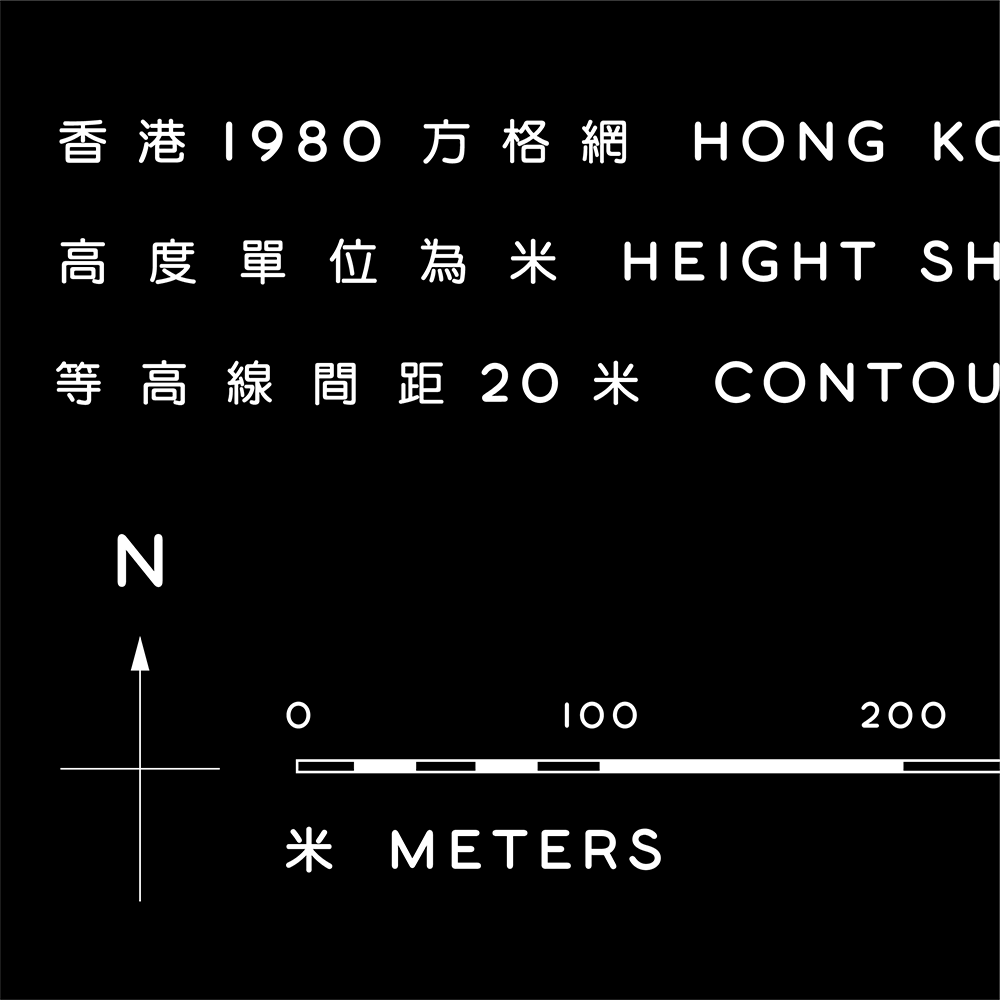
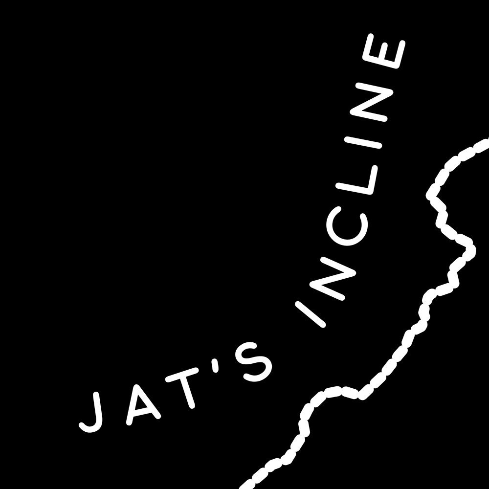
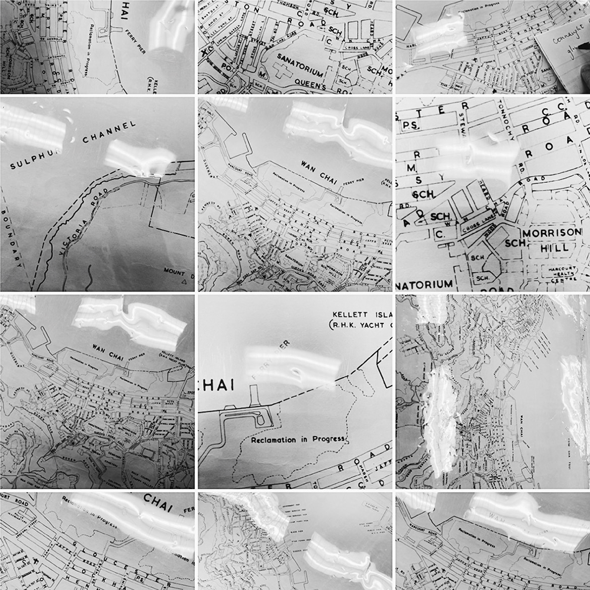
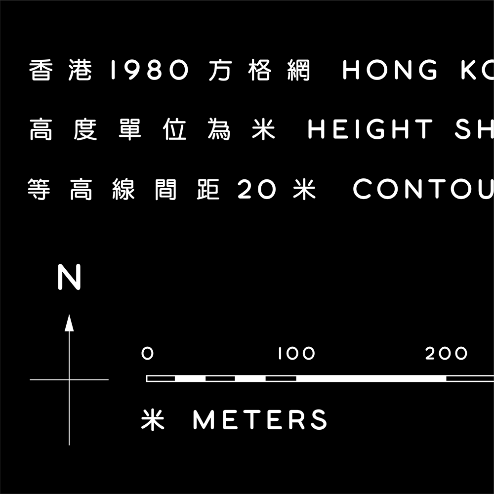
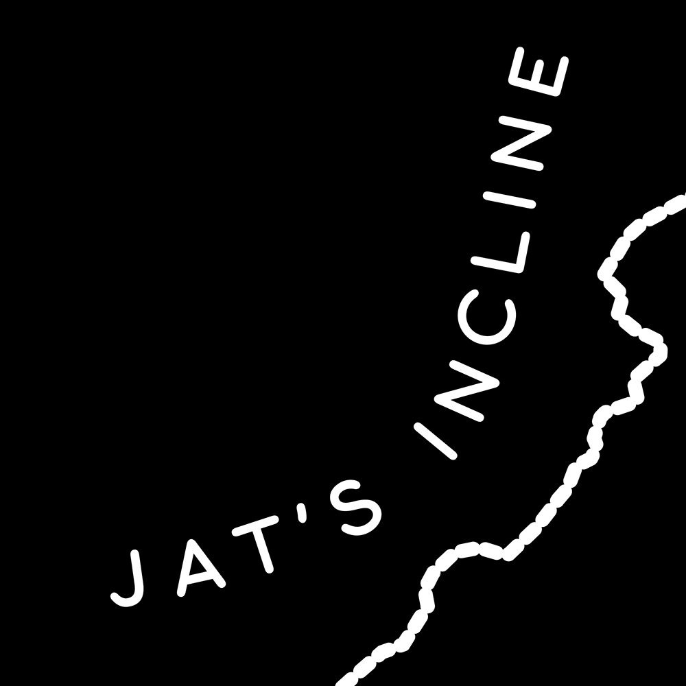
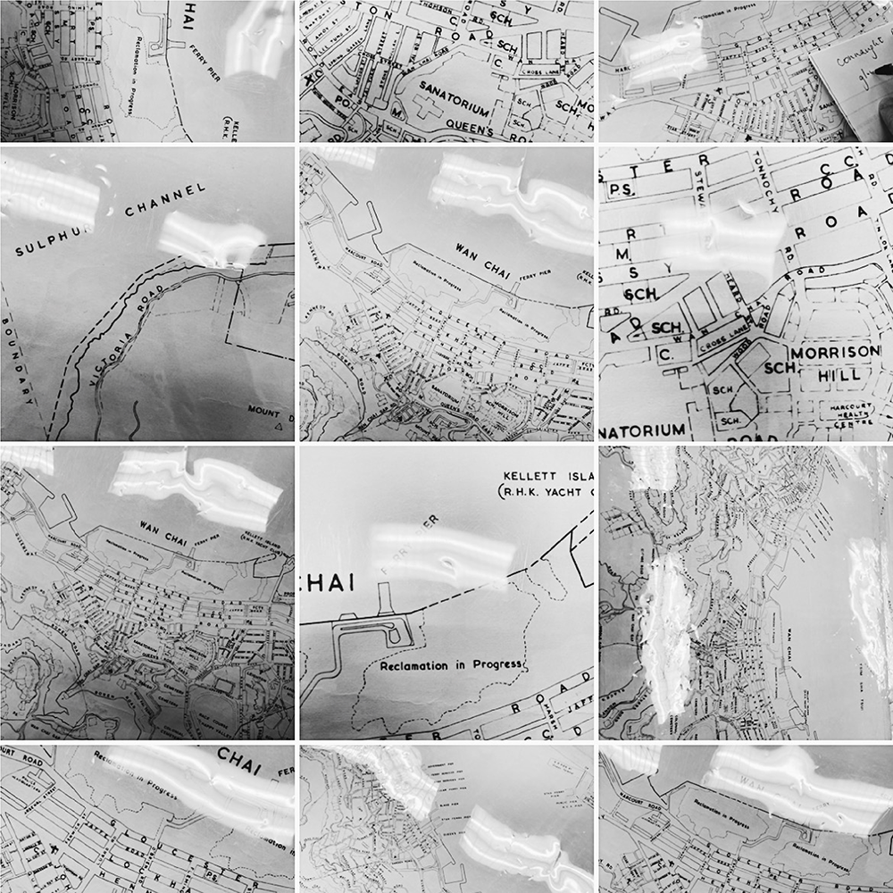

我是一名平面設計師，特別喜歡字體設計。
一次在香港中央圖書館發現了一幅香港六十年代的舊地圖，第一除了驚訝填海後香港地形的變化外，第二吸引我注意的是地圖上地方名字和街道名的字型，特別是「THE ISLAND OF HONG KONG」這一句。我覺得有趣的是一張政府官方地圖用了一款圓圓單線的字型，特別那些數字肥肥彎彎。加上舊印刷方式呈現出來油墨有些不均勻，這些像是漏墨和紙的摺痕，感覺更像是一幅私人珍藏的地圖。當時我拍了好多張照片作記錄，怎料剛好知道 LKK有出香港山徑地圖的構思，我就一心決定透過這個計劃把這幅地圖上的字體重新呈現！
由於這是英籍時期留下來的地圖，因此只有英文字體，中文字體方面我是透過 @93collectible 的一個Post (圖7) 中的香港地圖作參考，去搜尋一款近似配合的中文字體。我一直是他的follower，好喜歡看他的Post，感謝他的分享，讓我從這些舊印刷物刊中的設計可以看到香港舊時的美好。
或許字體粗幼大小這些只是微不足道的細節，但我總是喜歡設計時當中的觀察和微調的過程。
 




